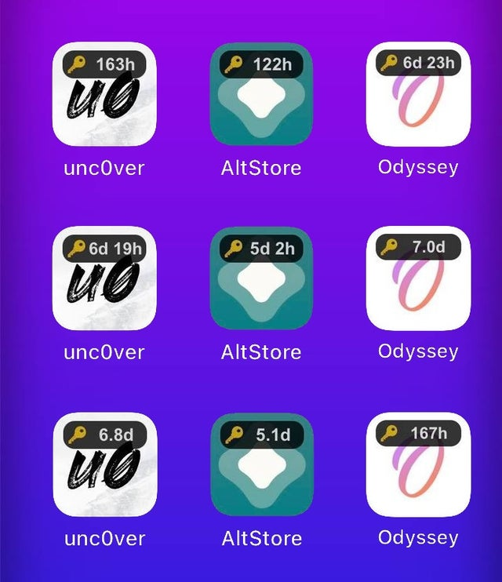

IOS TWEAK
IconCert 14
-
IconCert 14
Show remaining certificate time on app icon
Features:
- Show remaining certificate time on app icon
- Custom styles (opacity, animation, time format)
- Support iOS 13 - 14
I work very hard to make good, free and open source tweaks for everyone
If you want to support, you can buy me a coffee at https://www.paypal.me/haoict
Thanks a ton!
Open source at: https://github.com/haoict/iconcert
